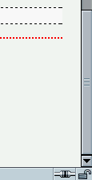
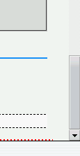

2003-11-07修正。Opera7.2でバグが解消しました。
html要素に下パディングを設定しても実際にはパディングが設置されない。
<style type="text/css">
html {
margin-bottom: 0;
padding-bottom: 10em;
}
body {
margin-bottom: 0;
padding-bottom: 1em;
border-bottom: 2px dotted red;
}
</style>
ページ下端の赤い点線ボーダーの下に10emの空間ができるはずです。
N7.02での表示（標準モード）
Opera7.11での表示（標準モード）